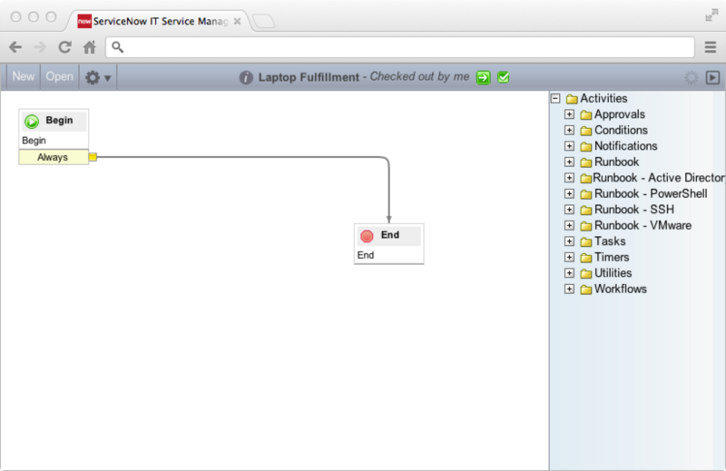

Defining a Service Catalog Workflow
| |
Note: This article applies to Fuji. For more current information, see Request Fulfillment Workflows at http://docs.servicenow.com
The ServiceNow Wiki is no longer being updated. Please refer to http://docs.servicenow.com for the latest product documentation. |
Contents
1 Overview
Use the Graphical Workflow Editor to create service catalog workflows that drive catalog request fulfillment.
After creating a workflow, attach it to any catalog item in the Workflow reference field on the item form.
Creating a workflow involves:
- Defining the new workflow fields.
- Defining workflow activities.
- Publishing the new workflow.
The two types of service catalog workflows are Request Level and Request Item Level.
2 Default Workflows
The two default service catalog workflows provided with the base system are:
- Service Catalog Request: Always runs and automatically approves a request less than $1,000.
- Service Catalog Item Request: Must be associated with a catalog item to run, and is only triggered if the requested item is approved.
3 Defining a Service Catalog Workflow: Example
This section defines an example of a Request Item Level service catalog workflow to fulfill a laptop request.
See the standard workflow documentation for more information about defining workflows.
3.1 Stage 1: Create a New Workflow
- Navigate to Workflow > Workflow Editor.
- Select New.
- Fill in the New Workflow form (see the table for field descriptions).
- Click Submit.
- ServiceNow displays a graphical representation of the new workflow that shows an Activities pane on the right.
- 
{kind=link}
{kind=link}
| Field | Input Value |
|---|---|
| Name | Laptop Fulfillment |
| Table | Requested Item [sc_req_item] Please keep the following information in mind:
|
| Expected time | Days 7 Hours 00:00:00. Because workflows cannot calculate the end time (not all of the activities within the workflow have defined times), the Expected time on the workflow becomes the Delivery Time on the catalog request.
Note:When both Expected time and Schedule are filled in, the catalog delivery time is then calculated based on the combination of both. For example, if you put 2 days as Expected time, it is calculated as 48 hours. If you then add a schedule that define a work day as 8 hours, the delivery time becomes 48 / 8 = 6 days. If your schedule excludes weekends, the calculation will also add 2 days for the weekend, making the delivery time 8 days. |
| Schedule | 8-5 weekdays. See Using Schedules for more information. |
| Timezone | US/Pacific. The timezone that the schedule applies to. |
| Description | A workflow for the fulfillment of laptop requests. |
3.2 Stage 2: Add Activities
- In the Activities pane, expand Approvals and drag the activity Approval - User onto the arrow between Begin and End.
- This activity generates an approval from the manager of the person requesting the laptop.
- Fill in the form that appears with:
- Click Submit.
- Expand Utilities in the Activities pane and drag the activity Set Values to the space below the approval.
- Drag from the yellow box beside Rejected on the Approval - User activity to the new Set Values activity.
- Drag again from the yellow box beside Always on the Set Values activity to End.
- This activity marks the request as rejected if the manager rejects the request and then ends the workflow.
- Fill in the form that appears with:
- Name: Rejected
- Stage: Completed
- Set These Values: Approval and Rejected
- Drag the activity Set Values onto the the arrow between Approval - User and End, and the fill in the form.
- This activity marks the request as approved if a manager approves it.
- Name: Approved
- Stage: Fulfillment
- Set These Values: Approval and Approved
- Drag the activity Create Task onto the arrow between Approved and End, and then fill in the form.
- This task tells Procurement to procure a laptop for the user.
- Name: Laptop Procurement
- Stage: Fulfillment
- Task type: Catalog Task [sc_task]
- Priority: 3 - Moderate
- Fulfillment group: Procurement
- Short description: Procure a Laptop
- Drag the activity Notification onto the arrow between Laptop Procurement and End, and then fill in the form.
- This task informs the requester that their laptop has been procured.
- Drag the activity Create Task onto the arrow between Procurement and End, and then fill in the form.
- This task tells Hardware to configure the laptop and prepare it for use.
- Name: Set Up Laptop
- Stage: Fulfillment
- Task Type: Catalog Task
- Priority: 3 - Moderate
- Fulfillment Group: Hardware
- Short Description: Set Up Laptop
- Drag the activity Create Task onto the arrow between Set Up Laptop and End, and then fill in the form.
- This task tells the requester to come pick up the laptop.
- Name: Pick Up Laptop
- Stage: Delivery
- Task Type: Catalog Task
- Priority: 3 - Moderate
- Assigned to: Leave this field blank. The Advanced script assigns this task to the user who requested the item.
- Short Description: Pick Up Laptop
- Advanced: Select the check box and set the Advanced Script value to: task.assigned_to=current.requested_for;
- Drag the activity Log Message onto the arrow between Pick Up Laptop and End, and then fill in the form.
- This leaves a message in the log to record the successful completion of the workflow.
- Name: Delivered
- Stage: Completed
- Message: The laptop delivery workflow is complete.
{kind=link}
{kind=link}
{kind=link}
{kind=link}
{kind=link}
See Approval and Rollback Activities for more information about activities.
3.3 Stage 3: Publish the Workflow
Open the Workflow Actions menu ( ) and select Publish to publish the workflow.
) and select Publish to publish the workflow.
The resulting workflow should look like this:
{kind=link}
Contents > Administer > Workflow > Workflow Examples
Contents > Deliver > IT Services > Service Catalog Management